4.3 修改工具
画好的线常常要修一修：倒个圆角、剪掉多余的、往外偏移一圈、复制几份。这一页讲「修改」菜单和草图里的镜像、阵列。
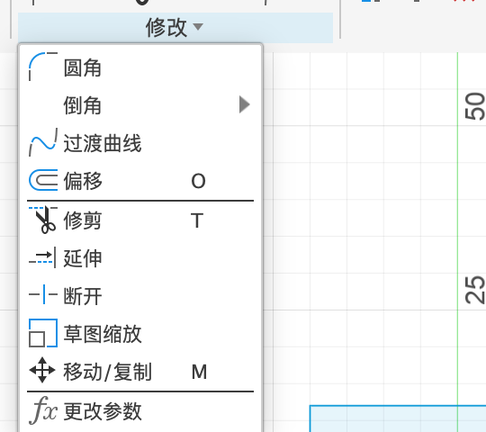
圆角、倒角、过渡曲线#
| 工具 | 怎么用 |
|---|---|
| 圆角 | 点两条相交的线（或直接点它们的交点），输入半径。两条线的拐角变成圆弧 |
| 倒角 ▸ | 等距离 / 两距离 / 距离和角度。拐角切成一条斜线 |
| 过渡曲线 | 点两条曲线的端部，自动生成一条光滑连接它们的曲线。可以选只是相切（G1，方向一致）还是曲率连续（G2，连弯的程度都平滑过渡，见 5.10） |
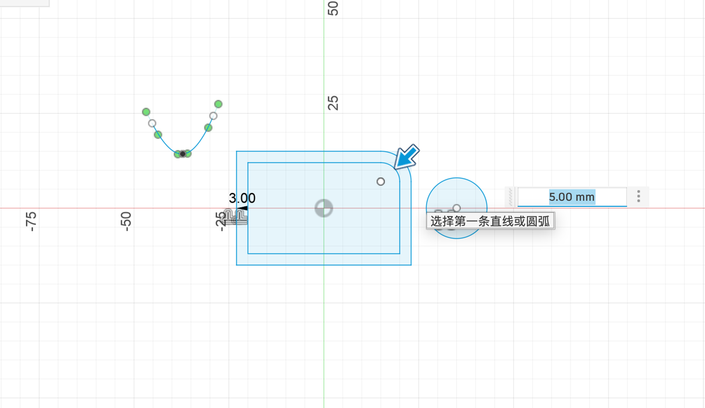
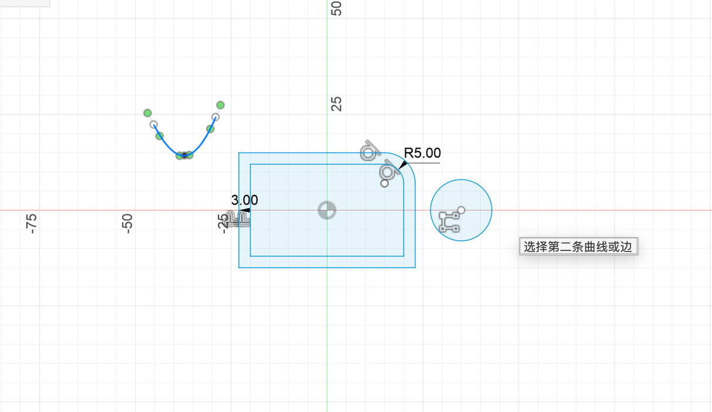
修剪、延伸、断开#
| 工具 | 快捷键 | 效果 |
|---|---|---|
| 修剪 | T | 鼠标移到线上，两个交点之间的那一段变红，点一下就删掉 |
| 延伸 | 点线的一端，它会一直伸长到碰到下一条线为止 | |
| 断开 | 在交点处把一条线断成两段（不删除），之后可以分别加约束 |
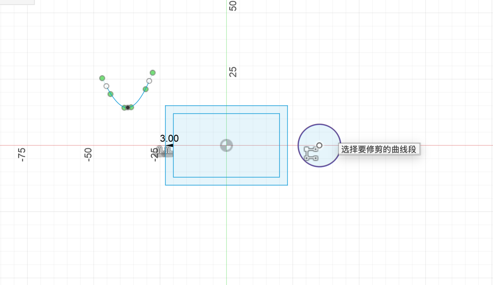
修剪的例子：画一个“钥匙孔”。先画一个圆，再画一个和它重叠的矩形，然后用修剪把重叠处多余的线点掉：
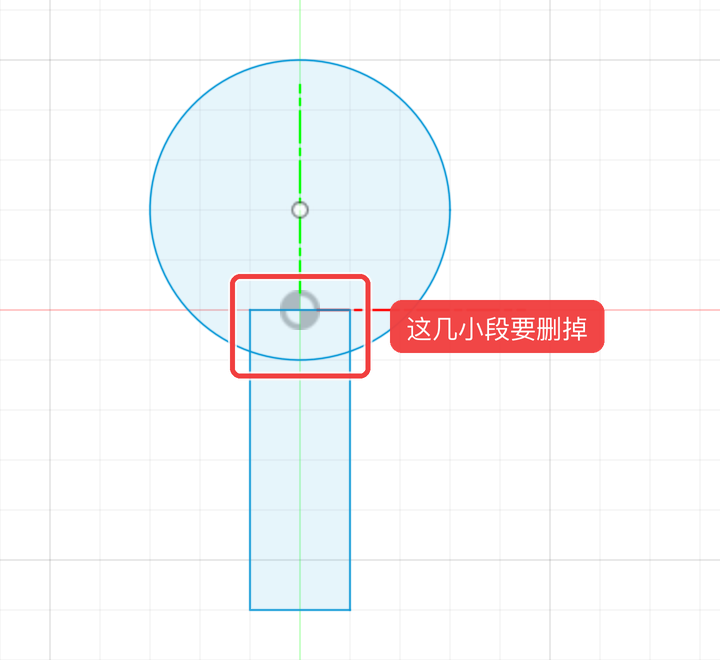
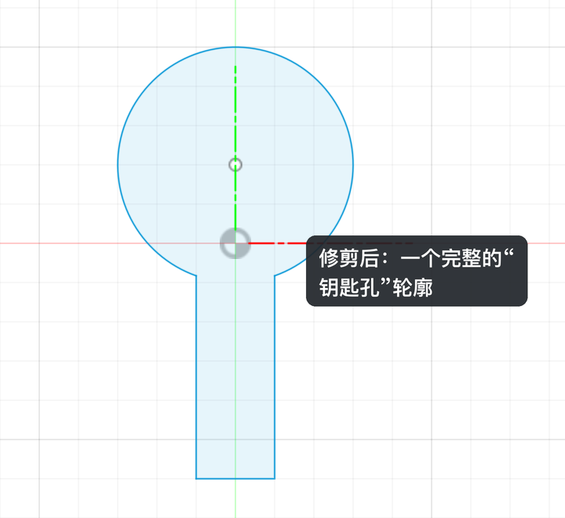
图 4.3-5修剪前：圆和矩形互相穿过，红框里的几小段是多余的（矩形上边、矩形两条竖边伸进圆里的部分、圆底下的一段弧）；按 T，依次点这几段，就剩下一个完整的钥匙孔轮廓（拖动中间的竖线对比）
延伸的例子：一条线差一点没碰到圆，用延伸点一下线头，它会一直伸到碰上的第一条线为止：
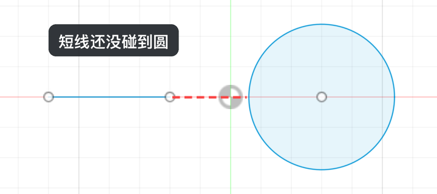
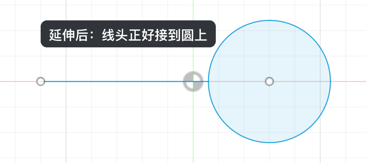
图 4.3-6「修改 → 延伸」，点短线靠近圆的那一头（拖动中间的竖线对比）
偏移#
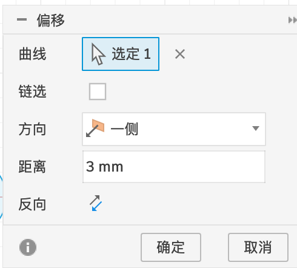
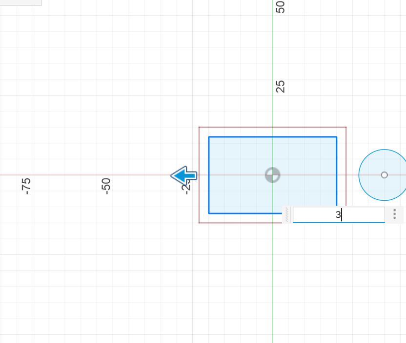
选项说明见 1.1。偏移是画“壁厚”“外框”最快的方法。
草图缩放、移动 / 复制#
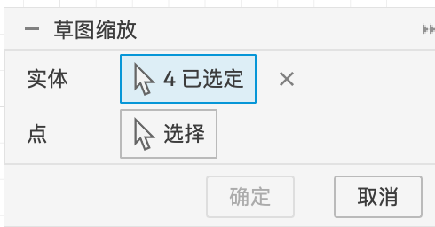
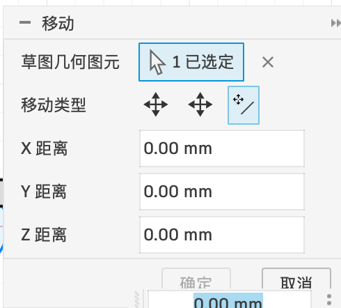
镜像和阵列#
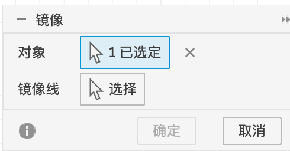
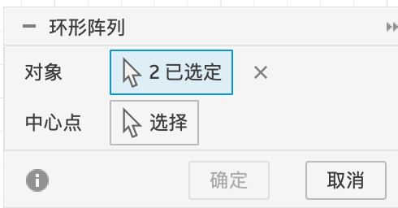
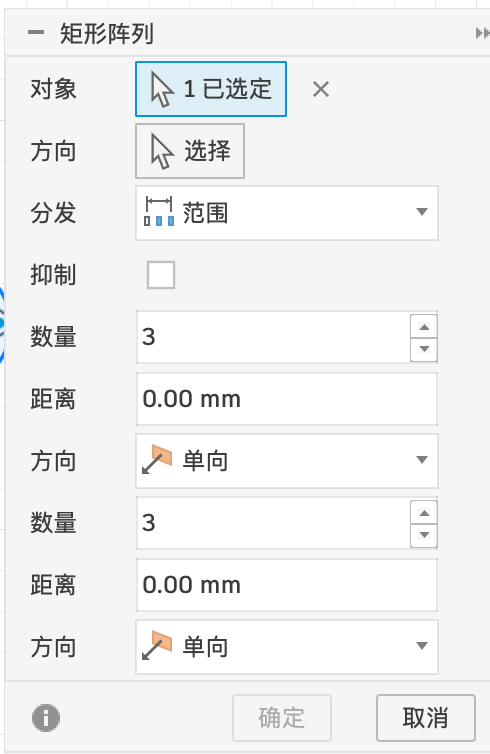
草图矩形阵列
| 选项 | 含义 |
|---|---|
| 对象 | 要复制的线 |
| 方向 | 第一个方向（默认是草图的水平方向） |
| 分布 | 范围（总长）/ 间距（相邻距离） |
| 抑制 | 去掉个别复制品 |
| 数量 / 距离 / 单向 | 每个方向的数量、距离，单向还是对称往两边 |